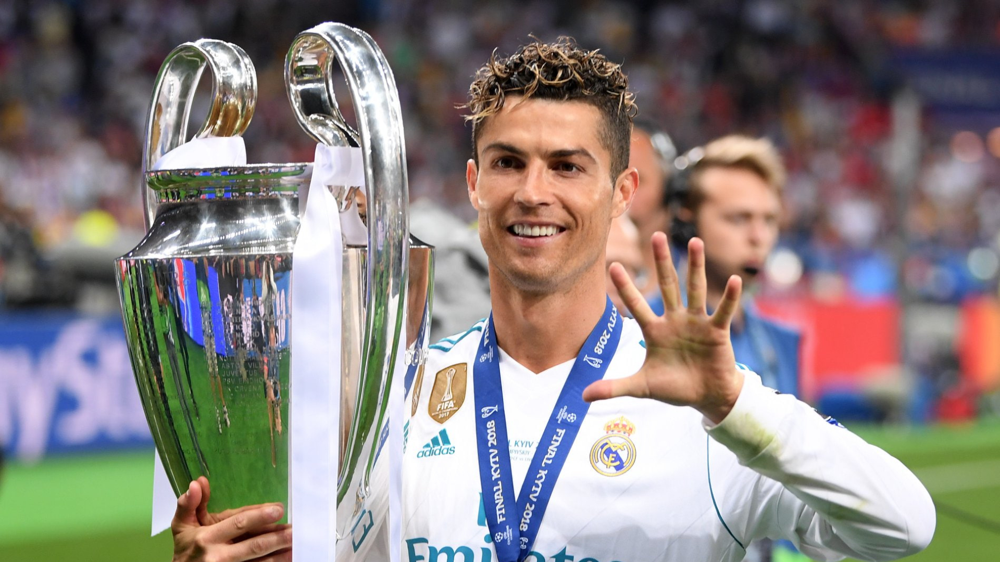
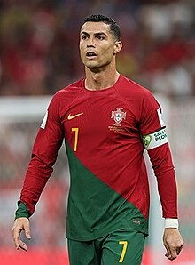
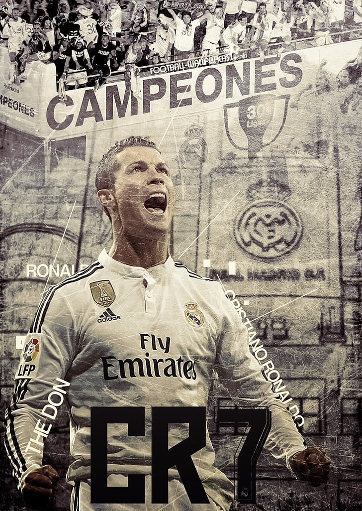
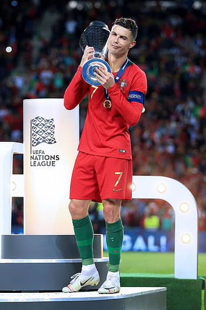
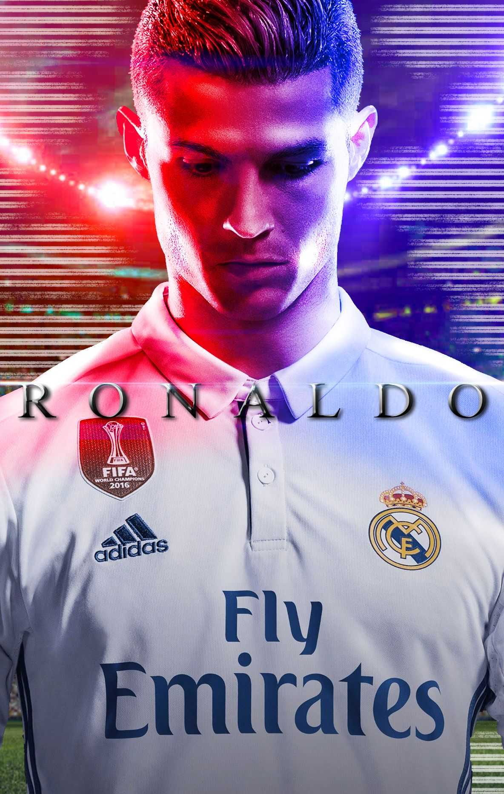

Cristiano Ronoldo
About
Cristiano Ronoldo
 Cristiano Ronaldo dos Santos Aveiro was born on 5 February 1985 in the São Pedro parish of Funchal, the capital of the Portuguese island of Madeira, and grew up in the nearby parish of Santo António. He is the fourth and youngest child of Maria Dolores dos Santos Viveiros da Aveiro, a cook, and José Dinis Aveiro, a municipal gardener and part-time kit man. His great-grandmother on his father's side, Isabel da Piedade, was from the island of São Vicente, Cape Verde. He has one older brother, Hugo, and two older sisters, Elma and Liliana Cátia "Katia". He was named after actor and U.S. President Ronald Reagan, whom his father was a fan of. His mother revealed that she wanted to abort him due to poverty, his father's alcoholism, and having too many children already, but her doctor refused to perform the procedure, as abortions were illegal in Portugal at that time. Ronaldo grew up in an impoverished Catholic Christian home, sharing a room with all his siblings. As a child, Ronaldo played for Andorinha from 1992 to 1995, where his father was the kit man, and later spent two years with Nacional. In 1997, aged 12, he went on a three-day trial with Sporting CP, who signed him for a fee of £1,500. He subsequently moved from Madeira to Alcochete, near Lisbon, to join Sporting's youth academy. By age 14, Ronaldo believed he had the ability to play semi-professionally and agreed with his mother to cease his education to focus entirely on football. With a troubled life as a student and living in Lisbon area away from his Madeiran family, he didn't complete schooling beyond the 6th grade. While popular with other students at school, he had been expelled after throwing a chair at his teacher, who he said had "disrespected" him. One year later, he was diagnosed with tachycardia, a condition that could have forced him to give up playing football. Ronaldo underwent heart surgery where a laser was used to cauterise multiple cardiac pathways into one, altering his resting heart rate. He was discharged from the hospital hours after the procedure and resumed training a few days later. Cristiano Ronaldo dos Santos Aveiro GOIH ComM (Portuguese pronunciation: [kɾiʃˈtjɐnu ʁɔˈnaldu]; born 5 February 1985) is a Portuguese professional footballer who plays as a forward for and captains both Saudi Professional League club Al Nassr and the Portugal national team. Widely regarded as one of the greatest players of all time, Ronaldo has won five Ballon d'Or awards[note 3] and four European Golden Shoes, the most by a European player. He has won 32 trophies in his career, including seven league titles, five UEFA Champions Leagues, the UEFA European Championship and the UEFA Nations League. Ronaldo holds the records for most appearances (183), goals (140) and assists (42) in the Champions League, goals in the European Championship (14), international goals (123) and international appearances (200). He is one of the few players to have made over 1,100 professional career appearances, and has scored over 800 official senior career goals for club and country, making him the highest goal-scorer of all time according to the IFFHS. He is the only player to score in five different FIFA World Cup tournaments.
Ronoldo's World Records and Achievements
 Ronaldo grew up in Madeira, Portugal, but after graduating from Sporting CP's youth system, he was immediately signed by Manchester United after their legendary manager Sir Alex Ferguson noticed his winger talent. Ronaldo spent six years at Manchester United, where he honed his skills as a skilled, fast, and lethal winger capable of scoring goals and creating chances for his teammates. Before moving to Real Madrid as the world's most expensive player, he won numerous trophies for Manchester United and even shone for Portugal. He has smashed some of the most important goal-scoring records in Real Madrid's history, as well as leading the club to significant trophies. Ronaldo also serves as the captain of the Portuguese national team, which won Euro 2016 for the first time in their history. He has also received numerous individual awards, confirming his status as one of the world's best footballers. 7 goals were scored in the Club World Cup Four goals have been scored in the Club World Cup Finals (shared with Lionel Messi) 4 (2008, 2014, 2016, 2017) Club World Cup trophies (shared with Toni Kroos) Only player in history to score in three Club World Cups: 2008, 2016, and 2017. (shared with Lionel Messi) Only player to win two Golden Boots at the Club World Cup. Thirteen appearances in the FIFPro World XI (2007-2019). (shared with Lionel Messi) 12 times among the top three candidates for the Ballon d'Or (2007-2009, 2011-2019). (shared with Lionel Messi) The most points in the Ballon d'Or voting: 946. (2017) In the Ballon d'Or vote, the largest victory margin was 429 points (2016) 32 international goals in a calendar year (club and national team) (2017) In a Club World Cup final, he is the only player to score a hat-trick (2016) First player in a professional league to score 40 goals in two consecutive seasons The first person to score in each minute of a game is the winner. League Title, UEFA Cup, League Supercup, League Cup, League MVP, Golden Boot, Ballon d'Or, and FIFA World Cup are the only trophies he has won at two separate teams (Completed on December 20th, 2014) Only player in history to score 60 or more goals four times in a calendar year (consecutively from 2011 to 2014) For the first time in his career, a player has scored more than 50 goals in four consecutive seasons. Only player in history to score 50 or more goals in five straight seasons. Only player in history to score 50 or more goals in six straight seasons. The UEFA Champions League has the most hat-tricks with eight (shared with Lionel Messi) Only player in a single Champions League season (2017/18) to score in every group stage match. Only player in Champions League history to score 15 or more goals in a single year (did it 3 times: 2013, 2015, 2017) Three UEFA Best Player Awards have been given to him. Most top scorer honors in the Champions League: 7 Only player to finish as the top scorer in the Champions League for six consecutive seasons (2012/13 - 2017/18). In the Champions League, the most goals scored against a single opponent. Against Juventus, ten goals were scored. Only player in UEFA Champions League history to score back-to-back hat-tricks in the knockout rounds (Bayern Munich and Atletico Madrid in 2017) In the UEFA Champions League knockout stage, he became the first player to score 50 goals. In the UEFA Champions League knockout stage, he became the first player to achieve 40 goals. In the UEFA Champions League, he became the first player to score 100 goals. In European competition, he was the first player to score 100 goals (97 UCL goals, 1 UCL qualifier goal, 2 UEFA Super Cup goals when record was achieved) The UEFA Champions League has the most quarter-final goals with 20. The only player in the history of a major European league to score 30+ goals in six straight seasons. In a single Champions League season, the following players have scored the most hat-tricks: In 2015/16, he scored three hat-tricks.
Cristiano Ronoldo's Greatest Performaces
 Cristiano Ronaldo marked his 1,000th professional game this weekend by scoring in a record-equalling 11th Serie A game in a row, as Juventus moved four points clear at the top of the table. Here we count down 10 of his greatest performances:
10) SPORTING 3-0 Moreirense, Primeira Liga 7 October 2002
At just 17 years of age, Ronaldo made his debut for Sporting Lisbon in a convincing 3-0 win against Moreirense. It was a dream senior debut for the teenager, who scored twice in what was a poor Sporting side who would go on to finish third in the Primeira Liga, some 27 points behind champions Benfica. Very few at the time would have thought that the youngster would go on to become one of the games greatest players, but it was here that Ronaldo first made his mark on the footballing world.9) Juventus 1-4 REAL MADRID, Champions League final, 3 June 2017
After a quiet start, Ronaldo came alive to level the game, exchanging passes with Dani Carvajal down the right before drilling a low shot which was too powerful for Gianluigi Buffon. He was not done there; midway through the second half, Luka Modric chipped the ball to the near post where Cristiano had darted to score his 600th career goal, and seal back-to-back European Cups. Ronaldo scores past Gianluigi Buffon in the Champions League final (Getty ) Ronaldo scores past Gianluigi Buffon in the Champions League final (Getty ) (Getty)8) Barcelona 1-2 REAL MADRID, La Liga, 21 April 2012
It will be remembered by many Real Madrid fans as the day that Ronaldo silenced the Camp Nou crowd with his famous “Calma” celebration. In a tense and nervy affair, Ronaldo scored the winner in the late stages of the game as Real beat Barca to end any hopes of a Catalan title pursuit. Ronaldo was crucial in helping Real to their first title in four years in a season where he scored 60 goals in all-competitions, including a staggering 46 league goals. It was also a record-breaking year for Real as they reached 100 points.7) Juventus 0-3 REAL MADRID, Champions League quarter-finals, 3 April 2018
Ronaldo scored twice including an incredible bicycle kick to help Real Madrid breeze past Juventus in the first leg of the Champions League quarter-final. He made history with the first of his two goals on the night, becoming the first player to score in 10 consecutive Champions League games. However, his overhead kick remains the night’s key talking point, forever being remembered as one of the Champions League’s greatest goals. The effort left Gianluigi Buffon with absolutely no chance and was so spectacular that many home fans stood to applaud.6) PORTUGAL 3-3 Spain, World Cup, 15 June 2018
This was the game that really set the tournament alight in Russia: a dramatic 3-3 draw between Portugal and Spain courtesy of a stunning display by who else but Ronaldo. He opened the scoring in the fourth minute with a penalty, before scoring again shortly before the break with a strike that was too powerful for David de Gea. His fantastic late free-kick, curled over the wall and into the top corner, completed his hat-trick and rescued a point for Portugal in what was their opening group match. In doing so, Ronaldo became only the fourth player to score in four consecutive World Cups, after Pele, Uwe Seeler and Miroslav Klose. Ronaldo curls home Portugal's third goal against Spain (Getty ) Ronaldo curls home Portugal's third goal against Spain (Getty ) (Getty)5) REAL MADRID 4-2 Bayern Munich, Champions League quarter-finals, 18 April 2017
In a match marked by controversy, Ronaldo reached 100 Champions League goals courtesy of a hat-trick in a 4-2 win against Bayern Munich. His treble helped the defending champions to a resounding 6-3 aggregate victory, as the Spanish giants reached the semi-final for the seventh consecutive year. It looked as if Ronaldo had won the game with his 76th-minute header before Sergio Ramos put through his own net to send the game to extra time. But Ronaldo was the star of the show once again scoring two more goals, with his left and right foot respectively, to complete the perfect hat-trick.4) Arsenal 1-3 MANCHESTER UNITED, Champions League semi-finals, 5 May 2009
Arguably Ronaldo’s greatest performance in a Manchester United shirt, given the opposition and the stage. The tie was in the balance after a 1-0 victory for United at Old Trafford in the first leg, but the Portuguese took the game away from Arsenal within 11 minutes, first setting up Ji-Sung Park before arrowing in a stunning free-kick from 35 yards. He added another in the second half after a blistering counter-attack to book United’s place in the final. Ronaldo scores United's third goal to beat Arsenal (Getty ) Ronaldo scores United's third goal to beat Arsenal (Getty ) (Getty)3) REAL MADRID 3-0 Wolfsburg, Champions League quarter-finals, 12 April 2016
In Real Madrid’s hour of need, up stepped Ronaldo, scoring a hat-trick at the Bernabeu to turn around a 2-0 deficit from the first leg. The first two came in less than a minute to suddenly draw the game level, before a 25-yard free-kick which had an air of inevitability as soon as he stepped up. Madrid went on to clinch their 11th Champions League crown.2) Sweden 2-3 PORTUGAL, World Cup qualifying play-offs, 19 November 2013
In what was one of his greatest performances for his country, Cristiano scored an incredible hat-trick in a 3-2 win against Sweden at the Friends Arena in Stockholm. In the battle between Ronaldo and Ibrahimovic, which saw both players score all of the tie’s goals, it was Cristiano who stole the show to help Portugal clinch their place in Brazil with a 4-2 aggregate win. With the scores level at half-time, Ronaldo took centre stage in what was a brilliant second-half display, with three powerful finishes on the break. It was also memorable night for the captain as he became Portugal’s all-time leading goalscorer, with 50 goals, surpassing retired forward Pauleta’s 47. Ronaldo celebrates after scoring his hat-trick goal against Sweden (Getty ) Ronaldo celebrates after scoring his hat-trick goal against Sweden (Getty ) (Getty)1) JUVENTUS 3-0 Atletico Madrid, Champions League round of 16, 12 March 2019
It what he described as a “magical night”, Cristiano Ronaldo’s hat-trick against Atletico Madrid for Juventus was inconceivable. After being outclassed at the Wanda Metropolitano in the first leg, losing 2-0, an angry Ronaldo left the stadium holding up five fingers to remind critics of his Champions League medal count. Juve needed something special to overturn the tie and progress to the next stage. Up stepped Ronaldo, as he so often does to single-handily send the Old Lady into the quarter-final. In the first half he headed home at the far post, before a second-half header was awarded courtesy of goal-line technology, and he completed his hat-trick from the penalty spot. Simply extraordinary.FootBall Clubs
